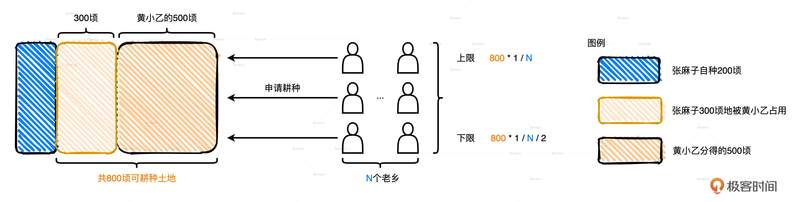
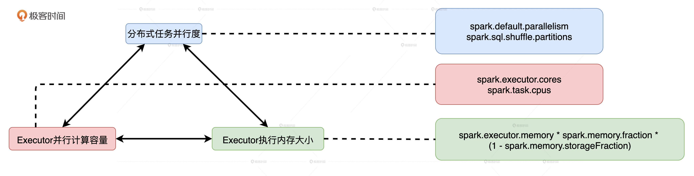

- 00 开篇词 Spark性能调优，你该掌握这些“套路”.md.html
- 01 性能调优的必要性：Spark本身就很快，为啥还需要我调优？.md.html
- 02 性能调优的本质：调优的手段五花八门，该从哪里入手？.md.html
- 03 RDD：为什么你必须要理解弹性分布式数据集？.md.html
- 04 DAG与流水线：到底啥叫“内存计算”？.md.html
- 05 调度系统：“数据不动代码动”到底是什么意思？.md.html
- 06 存储系统：空间换时间，还是时间换空间？.md.html
- 07 内存管理基础：Spark如何高效利用有限的内存空间？.md.html
- 08 应用开发三原则：如何拓展自己的开发边界？.md.html
- 09 调优一筹莫展，配置项速查手册让你事半功倍！（上）.md.html
- 10 调优一筹莫展，配置项速查手册让你事半功倍！（下）.md.html
- 11 为什么说Shuffle是一时无两的性能杀手？.md.html
- 12 广播变量（一）：克制Shuffle，如何一招制胜！.md.html
- 13 广播变量（二）：如何让Spark SQL选择Broadcast Joins？.md.html
- 14 CPU视角：如何高效地利用CPU？.md.html
- 15 内存视角（一）：如何最大化内存的使用效率？.md.html
- 16 内存视角（二）：如何有效避免Cache滥用？.md.html
- 17 内存视角（三）：OOM都是谁的锅？怎么破？.md.html
- 18 磁盘视角：如果内存无限大，磁盘还有用武之地吗？.md.html
- 19 网络视角：如何有效降低网络开销？.md.html
- 20 RDD和DataFrame：既生瑜，何生亮？.md.html
- 21 Catalyst逻辑计划：你的SQL语句是怎么被优化的？（上）.md.html
- 22 Catalyst物理计划：你的SQL语句是怎么被优化的（下）？.md.html
- 23 钨丝计划：Tungsten给开发者带来了哪些福报？.md.html
- 24 Spark 3.0（一）：AQE的3个特性怎么才能用好？.md.html
- 25 Spark 3.0（二）：DPP特性该怎么用？.md.html
- 26 Join Hints指南：不同场景下，如何选择Join策略？.md.html
- 27 大表Join小表：广播变量容不下小表怎么办？.md.html
- 28 大表Join大表（一）：什么是“分而治之”的调优思路？.md.html
- 29 大表Join大表（二）：什么是负隅顽抗的调优思路？.md.html
- 30 应用开发：北京市小客车（汽油车）摇号趋势分析.md.html
- 31 性能调优：手把手带你提升应用的执行性能.md.html
- Spark UI（上）深入解读Spark作业的“体检报告”.md.html
- Spark UI（下）：深入解读Spark作业的“体检报告”.md.html
- 期末考试 “Spark性能调优”100分试卷等你来挑战！.md.html
- 结束语 在时间面前，做一个笃定学习的人.md.html
- 捐赠
14 CPU视角：如何高效地利用CPU？
你好，我是吴磊。
在日常的开发与调优工作中，总有同学向我抱怨：“为什么我的应用CPU利用率这么低？偌大的集群，CPU利用率才10%！”确实，较低的CPU利用率不仅对宝贵的硬件资源来说是一种非常大的浪费，也会让应用端到端的执行性能很难达到令人满意的效果。那么，在分布式应用开发中，我们到底该如何高效地利用CPU？
我们说过，性能调优的最终目的，是在所有参与计算的硬件资源之间寻求协同与平衡，让硬件资源达到一种平衡、无瓶颈的状态。对于CPU来说，最需要协同和平衡的硬件资源非内存莫属。原因主要有两方面：一方面，在处理延迟方面，只有内存能望其项背；另一方面，在主板上内存通过数据总线直接向CPU寄存器供给数据。因此，理顺它们之间的关系，可以为性能调优奠定更好的基础。
那么，今天这一讲，我们就从硬件资源平衡的角度入手，去分析CPU与内存到底该如何合作。
CPU与内存的平衡本质上是什么？
我们知道，Spark将内存分成了Execution Memory和Storage Memory两类，分别用于分布式任务执行和RDD缓存。其中，RDD缓存虽然最终占用的是Storage Memory，但在RDD展开（Unroll）之前，计算任务消耗的还是Execution Memory。因此，Spark中CPU与内存的平衡，其实就是CPU与执行内存之间的协同与配比。
要想平衡CPU与执行内存之间的协同和配比，我们需要使用3类配置参数，它们分别控制着并行度、执行内存大小和集群的并行计算能力。只有它们设置得当，CPU和执行内存才能同时得到充分利用。否则CPU与执行内存之间的平衡就会被打破，要么CPU工作不饱和，要么OOM内存溢出。
想要知道这3类参数都包含哪些具体的配置项，以及它们到底是怎么配置的，我们需要先弄清楚一些基础知识，也就是并行计算的线程之间是如何瓜分执行内存的。为了帮助你理解，我先来给你讲个故事。
黄小乙的如意算盘：并行计算的线程如何瓜分执行内存？
还记得地主招租的故事吗？与张麻子签订占地协议之后，黄小乙就开始盘算，自己分得的那块田地怎么经营才最划算。
他心想：“这么一大块地，我亲自种肯定划不来。一，我没有张麻子勤快；二，不管是种棉花还是咖啡都很耗时、费力，面朝黄土背朝天，我可耽误不起那功夫！不如，我把土地转让出去，让别人来种，我只管收购、销售，赚到的差价也够我吃穿不愁了！”
于是，他打定主意，贴出了一张告示。
告示贴出去不到三天，十里八村的人都赶来承让土地，他们大部分都是吃苦耐劳的庄稼汉，一心想凭借这次机会改善生活，所以每个人恨不能把500顷的田地全都承让过来。
黄小乙见状，心中大喜，认为不仅自己的土地很快就可以被种满，还能名正言顺地去抢占张麻子的那块地。不过，也不能光图规模，还要确保棉花、咖啡的产出质量，更重要的是得想个办法让这种运作模式可持续。
于是，黄小乙追加了一项补充条款：“鉴于老乡们参与热情高涨，公平起见，我又制定了新的土地转让规则：首先，每位老乡能够获得的土地面积有上下限，它的具体数值由可耕种土地总面积和申请人数共同决定；其次，土地转让权的有效时间与农作物生长周期一致，一旦作物丰收，承让人需让出土地，如有意愿再次耕种需重新申请。”

比如说，现阶段可耕种土地总面积已由500顷扩张为800顷（这是黄小乙就抢占了张麻子的地之后的土地总面积），如果有400位老乡申请土地转让权，那么每位老乡最高可得2顷（800/400）的土地，最低可得1顷（800/400/2）土地。也就是说，如果老乡人数为N，那么每位老乡能够获得的土地面积会在（1/N/2，1/N）之间浮动。
这个规定大伙儿都心服口服，没过多久，800顷土地就全部转让完了。一笔多赢的买卖让大伙都能各取所需，也让老谋深算的黄四郎都不禁心挑大指，感叹道“真是长江水后浪催前浪，一代新人换旧人！”
好啦，故事到这里暂时告一段落，但是黄小乙这份如意算盘和今天要讲的内容有什么关系呢？
我们讲过，黄小乙租赁的土地类比的是内存区域中的Execution Memory。在今天的故事里，黄小乙招募的棉农和咖啡农对应的就是，Executor线程池中一个又一个执行分布式任务的线程。土地出让规则对应的就是，任务并发过程中多个线程抢占内存资源时需要遵循的基本逻辑。
那么，执行内存抢占规则就是，在同一个Executor中，当有多个（记为N）线程尝试抢占执行内存时，需要遵循2条基本原则：
- 执行内存总大小（记为M）为两部分之和，一部分是Execution Memory初始大小，另一部分是Storage Memory剩余空间
- 每个线程分到的可用内存有一定的上下限，下限是M/N/2，上限是M/N，也就是均值
三足鼎立：并行度、并发度与执行内存
理清了线程与执行内存的关系之后，我们再来说说与并发度、执行内存和并行度这三者对应的3类配置项分别是什么，以及它们如何影响CPU与计算内存之间的平衡。
3类配置项
我们讲过，并行度指的是为了实现分布式计算，分布式数据集被划分出来的份数。并行度明确了数据划分的粒度：并行度越高，数据的粒度越细，数据分片越多，数据越分散。
并行度可以通过两个参数来设置，分别是spark.default.parallelism和spark.sql.shuffle.partitions。前者用于设置RDD的默认并行度，后者在Spark SQL开发框架下，指定了Shuffle Reduce阶段默认的并行度。
那什么是并发度呢？我们在配置项那一讲提到过，Executor的线程池大小由参数spark.executor.cores决定，每个任务在执行期间需要消耗的线程数由spark.task.cpus配置项给定。两者相除得到的商就是并发度，也就是同一时间内，一个Executor内部可以同时运行的最大任务数量。又因为，spark.task.cpus默认数值为1，并且通常不需要调整，所以，并发度基本由spark.executor.cores参数敲定。
就Executor的线程池来说，尽管线程本身可以复用，但每个线程在同一时间只能计算一个任务，每个任务负责处理一个数据分片。因此，在运行时，线程、任务与分区是一一对应的关系。
分布式任务由Driver分发到Executor后，Executor将Task封装为TaskRunner，然后将其交给可回收缓存线程池（newCachedThreadPool）。线程池中的线程领取到TaskRunner之后，向Execution Memory申请内存，然后开始执行任务。
如果我们把棉农、咖啡农类比CPU线程，那么TaskRunner就可以理解为锄具，Task要处理的数据分片可以理解为作物种子。有了锄具和种子之后，老乡们得去黄小乙那儿申请块地，才能开始耕种。
最后，我们再来说说执行内存。黄小乙的地就是执行内存，堆内执行内存的初始值由很多参数共同决定，具体的计算公式是：spark.executor.memory * spark.memory.fraction * (1 - spark.memory.storageFraction)。相比之下，堆外执行内存的计算稍微简单一些：spark.memory.offHeap.size * (1 - spark.memory.storageFraction)。
除此之外，在统一内存管理模式下，在Storage Memory没有被RDD缓存占满的情况下，执行任务可以动态地抢占Storage Memory。因此，在计算可用于分配给执行任务的内存总量时，还要把有希望抢占过来的这部分内存空间考虑进来。这也是为什么黄小乙的可耕种土地总面积，会从最开始的500顷逐渐扩展到800顷。
由此可见，可分配的执行内存总量会随着缓存任务和执行任务的此消彼长，而动态变化。但无论怎么变，可用的执行内存总量，都不会低于配置项设定的初始值。
好啦，搞明白并行度、并发度和执行内存的概念，以及各自的配置项之后，我们再通过两个经常影响CPU利用率的例子，来说说它们是怎么影响CPU与计算内存之间的平衡的，由此总结出提升CPU利用率的办法。
CPU低效原因之一：线程挂起
在给定执行内存总量M和线程总数N的情况下，为了保证每个线程都有机会拿到适量的内存去处理数据，Spark用HashMap数据结构，以（Key，Value）的方式来记录每个线程消耗的内存大小，并确保所有的Value值都不超过M/N。在一些极端情况下，有些线程申请不到所需的内存空间，能拿到的内存合计还不到M/N/2。这个时候，Spark就会把线程挂起，直到其他线程释放了足够的内存空间为止。
你可能会问：“既然每个线程能拿到的内存上限是M/N，也就是内存总量对线程数取平均值，为什么还会出现有的线程连M/N/2都拿不到呢？这在数学上也不成立呀！”这是个好问题。这种情况的出现，源于3方面的变化和作用：
- 动态变化的执行内存总量M
- 动态变化的并发度N~
- 分布式数据集的数据分布
首先，动态变化的执行内存总量M我们刚刚已经说过了。M的下限是Execution Memory初始值，上限是spark.executor.memory * spark.memory.fraction划定的所有内存区域。在应用刚刚开始执行的时候，M的取值就是这个上限，但随着RDD缓存逐渐填充Storage Memory，M的取值也会跟着回撤。
另外，到目前为止，（1/N/2，1/N）上下限的计算我们用的都是线程总数N，线程总数N是固定的。N的取值含义是一个Executor内最大的并发度，更严格的计算公式是spark.executor.cores除以spark.task.cpus。但实际上，上下限公式的计算用的不是N，而是N~。N的含义是Executor内当前的并发度，也就是Executor中当前并行执行的任务数。显然N <= N。
换句话说，尽管一个Executor中有N个CPU线程，但这N个线程不一定都在干活。在Spark任务调度的过程中，这N个线程不见得能同时拿到分布式任务，所以先拿到任务的线程就有机会申请到更多的内存。在某些极端的情况下，后拿到任务的线程甚至连一寸内存都申请不到。不过，随着任务执行和任务调度的推进，N~会迅速地趋近于N，CPU线程挂起和内存分配的情况也会逐渐得到改善。
就像黄小乙的补充条款中举的那个例子一样，当可耕种土地总面积为800顷的时候，如果有400位老乡申请土地转让权，那么每位老乡最多可得800/400=2顷土地，最低可得800/400/2=1顷土地。
但如果这400位老乡不是同时来的，而是分两批来的，每批来200人的话，就会出现问题。按照他的规则，先来的这200位老乡，每人最多可得800/200 = 4顷土地。咱们前面说了，每个申请的老乡都想通过这次机会发点小财，于是这200位老乡每人都申请了4顷地，黄小乙的地一下子就被分光了！后来的200位老乡就没地可种了，他们只能等到第一批老乡的棉花和咖啡丰收了，再重新一起申请土地转让权。
假设第一批老乡同时大丰收，按照黄小乙转让规则的第一条，第一批老乡要交出土地使用权，如果想要继续耕种的话，就得和第二批老乡一起重新申请。在这种情况下，上下限的计算才是黄小乙最开始举例的那种算法。
第三个影响任务并发度和内存分配的因素，是分布式数据集的分布情况。在刚才的例子中，如果第一批老乡每人只申请2顷土地，那么第二批老乡来了之后依然有地可种。每人申请多大的土地，取决于他手里有多少农作物种子，我们之前把每个Task需要处理的数据分片比作是作物种子，那么，数据分片的数据量决定了执行任务需要申请多少内存。如果分布式数据集的并行度设置得当，因任务调度滞后而导致的线程挂起问题就会得到缓解。
CPU低效原因之二：调度开销
线程挂起的问题得到缓解，CPU利用率就会有所改善。既然如此，是不是把并行度设置到最大，每个数据分片就都能足够小，小到每个CPU线程都能申请到内存，线程不再挂起就万事大吉了呢？
当然不是，并行度足够大，确实会让数据分片更分散、数据粒度更细，因此，每个执行任务所需消耗的内存更少。但是，数据过于分散会带来严重的副作用：调度开销骤增。
对于每一个分布式任务，Dirver会将其封装为TaskDescription，然后分发给各个Executor。TaskDescription包含着与任务运行有关的所有信息，如任务ID、尝试ID、要处理的数据分片ID、开发者添加的本地文件和Jar包、任务属性、序列化的任务代码等等。Executor接收到TaskDescription之后，首先需要对TaskDescription反序列化才能读取任务信息，然后将任务代码再反序列化得到可执行代码，最后再结合其他任务信息创建TaskRunner。
因此你看，每个任务的调度与执行都需要Executor消耗CPU去执行上述一系列的操作步骤。数据分片与线程、执行任务一一对应，当数据过于分散，分布式任务数量会大幅增加，但每个任务需要处理的数据量却少之又少，就CPU消耗来说，相比花在数据处理上的比例，任务调度上的开销几乎与之分庭抗礼。显然，在这种情况下，CPU的有效利用率也是极低的。
如何优化CPU利用率？
你可能会说：“这也太尴尬了，并行度低了不行，容易让CPU线程挂起；高了也不行，调度开销太大，CPU有效利用率也不高。高也不行、低也不行，那我该怎么办呢？”
咱们不妨来算笔账。我们还是拿黄小乙的如意算盘来举例，如果400个老乡同时来申请他的800顷地，那么每个老乡能分到1到2顷土地不等。相应地，每位老乡需要购买的种子应该刚好够种满1到2顷地。因为，买多了种不下，买少了还亏。假设洼子村农产品交易市场的种子总量刚好够种1000顷地，从卖家的视角出发，这些种子应该售卖1000/2 =500到1000/1 = 1000次，才能赚到最多的钱。
因此，在给定Executor线程池和执行内存大小的时候，我们可以参考上面的算法，去计算一个能够让数据分片平均大小在（M/N/2, M/N）之间的并行度，这往往是个不错的选择。
总的来说，对CPU利用率来说，并行度、并发度与执行内存的关系就好像是一尊盛满沸水的三足鼎，三足齐平则万事大吉，但凡哪一方瘸腿儿，鼎内的沸水就会倾出伤及无辜。

小结
今天这一讲，我们从CPU与执行内存平衡的角度，通过梳理Executor并行度、并发度和执行内存之间的关系，以及它们对CPU利用率的影响，总结出了有效提升CPU利用率的方法。
首先，在一个Executor中，每个CPU线程能够申请到的内存比例是有上下限的，最高不超过1/N，最低不少于1/N/2，其中N代表线程池大小。
其次，在给定线程池大小和执行内存的时候，并行度较低、数据分片较大容易导致CPU线程挂起，线程频繁挂起不利于提升CPU利用率，而并行度过高、数据过于分散会让调度开销更显著，也不利于提升CPU利用率。
最后，在给定执行内存M、线程池大小N和数据总量D的时候，想要有效地提升CPU利用率，我们就要计算出最佳并行度P，计算方法是让数据分片的平均大小D/P坐落在（M/N/2, M/N）区间。这样，在运行时，我们的CPU利用率往往不会太差。
每日一练
- 从Executor并发度、执行内存大小和分布式任务并行度出发，你认为在什么情况下会出现OOM的问题？
- 由于执行内存总量M是动态变化的，并发任务数N~也是动态变化的，因此每个线程申请内存的上下限也是动态调整的，你知道这个调整周期以什么为准？
期待在留言区看到你的思考和答案，如果你的朋友也在为提高CPU利用率苦恼，欢迎你把这一讲转发给他，我们下一讲见！
© 2019 - 2023 Liangliang Lee. Powered by gin and hexo-theme-book.